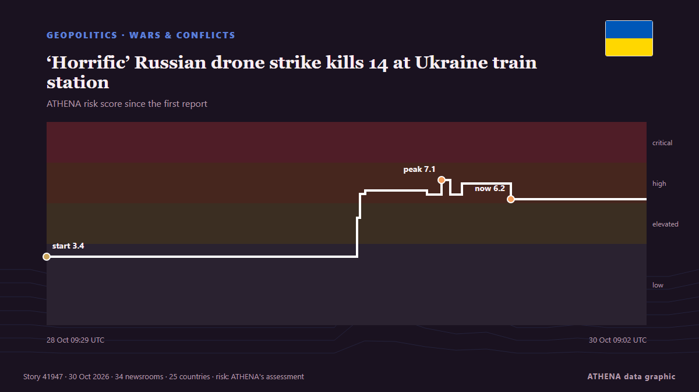

‘Horrific’ Russian drone strike kills 14 at Ukraine train station

Another 14 people were wounded, including an 11-year-old boy and a man who had “both legs amputated”. von The Straits Times
Unabhängig gemeldet von 34 Medien in 25 Ländern seit dem 28. Okt., zuerst von The Straits Times; die Berichterstattung flaut ab. ATHENA stuft das Risiko als hoch ein (6.1/10), vor allem wegen der Schwere des beschriebenen Schadens und seiner geografischen und sektoralen Reichweite. Die Konfidenz liegt bei 89 % (hoch): 34 Medien bestätigen es unabhängig, bei einer mittleren Verlässlichkeit der Quellen von 77 %. Medien nach Land: Ukraine (5), Singapur (3), Vereinigte Staaten (3). Berichterstattung: 28. Okt. bis 30. Okt., 48 Stunden.
Warum es wichtig ist: Russlands Großangriff auf die Ukraine begann im Februar 2022. Dieser Tracker verfolgt die Kämpfe, Angriffe auf Infrastruktur und die Diplomatie rund um den Krieg, wie Redaktionen weltweit darüber berichten.
Was sich geändert hat: 38 neue Berichte von 33 Redaktionen in den 24 Stunden bis 30. Okt..
Schlagzeilen werden auf Englisch angezeigt, wie veröffentlicht.
Auf einen Blick
Ausgewählt, bewertet und geschrieben nach der veröffentlichten Methodik von ATHENA. Kein Redakteur greift in einzelne Ereignisse ein. So entsteht ATHENA ›
| 28 Oct 09:21 UTC | 1 |
|---|---|
| 28 Oct 11:21 UTC | 1 |
| 28 Oct 13:21 UTC | 0 |
| 28 Oct 15:21 UTC | 0 |
| 28 Oct 17:21 UTC | 0 |
| 28 Oct 19:21 UTC | 0 |
| 28 Oct 21:21 UTC | 0 |
| 28 Oct 23:21 UTC | 0 |
| 29 Oct 01:21 UTC | 0 |
| 29 Oct 03:21 UTC | 0 |
| 29 Oct 05:21 UTC | 0 |
| 29 Oct 07:21 UTC | 0 |
| 29 Oct 09:21 UTC | 12 |
| 29 Oct 11:21 UTC | 11 |
| 29 Oct 13:21 UTC | 6 |
| 29 Oct 15:21 UTC | 3 |
| 29 Oct 17:21 UTC | 4 |
| 29 Oct 19:21 UTC | 0 |
| 29 Oct 21:21 UTC | 0 |
| 29 Oct 23:21 UTC | 1 |
| 30 Oct 01:21 UTC | 0 |
| 30 Oct 03:21 UTC | 0 |
| 30 Oct 05:21 UTC | 0 |
| 30 Oct 07:21 UTC | 1 |
| 28 Oct 09:29 UTC | 3.4 |
|---|---|
| 29 Oct 10:07 UTC | 5.3 |
| 29 Oct 10:19 UTC | 6.5 |
| 29 Oct 10:44 UTC | 6.6 |
| 29 Oct 15:37 UTC | 6.4 |
| 29 Oct 16:47 UTC | 7.1 |
| 29 Oct 17:28 UTC | 6.4 |
| 29 Oct 18:25 UTC | 7.0 |
| 29 Oct 22:16 UTC | 6.2 |
| 30 Oct 09:02 UTC | 6.1 |
Warum diese Zahlen
Bedeutung
Risiko
Konfidenz
Die Berichterstattung – wer berichtete, und wann
Schlagzeile wie veröffentlicht · öffnet das Original- The Straits Times · SingapurHarassed by Russian drones, Ukraine's trains keep on rolling
- The Independent · Vereinigtes KönigreichReality of Ukraine's train travel: Russian drones, forced evacuations and risk of random death
- APA (English) · AserbaidschanRussian army strikes electric train in Ukraine's Dnipro, killing 13 people
- RTÉ News · IrlandRussia, Ukraine say Oleshky demining operations complete
- Kyiv Independent · Ukraine'Russia's mass murder:' Drone strike on Dnipro station kills 15 amid deadly daytime attacks on Chernihiv, Kremenchuk
- Meduza (English) · RusslandRussian drone strikes train station in Ukraine’s Dnipro, killing at least 13
- The Straits Times · Singapur‘Horrific’ Russian drone strike kills 14 at Ukraine train station
- Times of India · IndienRussia drone hits 2 trains at busy Ukraine station, 13 killed
- Free Malaysia Today · MalaysiaUkraine says at least 13 killed in Russian attack on train station
- Ukrainska Pravda (English) · UkraineRussian drone has struck platform in Dnipro where commuter and passenger trains were standing – photos, video
- Novinite · BulgarienRussian Drone Strike on Dnipro Train Station Kills at Least 13
- NDTV · Indien13 Killed As Russian Drone Slams Into Ukraine Train Platform: Authorities
- Punch · NigeriaRussian drone strike kills 13 at Ukraine train station
- Anadolu Agency (English) · Türkei13 killed in attack on passenger train in Ukraine’s Dnipro
- DW English · DeutschlandUkraine: 14 killed in Russian drone strike on crowded Dnipro train station
- The New York Times (World) · Vereinigte StaatenRussian Strike on Ukrainian Train Station Kills 14
- France 24 English · FrankreichAt least 13 killed in 'horrific' Russian drone strike at Ukraine train station
- Arab News · Saudi-Arabien‘Horrific’ Russian drone strike kills 13 at Ukraine train station: Kyiv
- UN News · Vereinigte StaatenRussia drone strike on Ukrainian railway station kills 13
- The Korea Times · SüdkoreaRussian drone attack on train station kills 13 in Ukraine's Dnipro
- Bangkok Post — page reader · Thailand'Horrific' Russian drone strike kills 13 at Ukraine train station
- CNA (Channel NewsAsia) · SingapurRussian drone strike on Ukraine train station kills 13
- BBC News · Vereinigtes KönigreichRussian drone attack on Ukrainian train station kills at least 14, officials say
- Channels TV · Nigeria‘Horrific’ Russian Drone Strike Kills 14 At Ukraine Train Station
- Egypt Independent · ÄgyptenRussia strikes Dnipro train station in central Ukraine, killing 14 Russia strikes Dnipro train station in central Ukraine, killing 14
- ABC News Australia · AustralienRussian drone strike on Ukrainian train platform kills 14
- RFE/RL (English) · INTRussian Drone Strikes Railway Station In Dnipro, Killing At Least 14
- Politico Europe · BelgienRussian strike on busy train platform kills at least 14 in Dnipro
- Kyiv Post · UkraineMacron Says Russia Choosing ‘Escalation’ After Deadly Dnipro Train Station Strike in Ukraine
- Xinhua (English) — page reader · ChinaRussian drone strike kills 14 at Ukraine train station as Moscow reports massive drone attack
- Free Malaysia Today · MalaysiaEU urges allies to up pressure on Russia after Ukraine train station strike
- CBS News (World) · Vereinigte StaatenRussian strikes kill 14 in Ukraine but local truce brings some hope
- Anadolu Agency (English) · TürkeiEU leaders vow continued support for Ukraine after deadly Dnipro attack
- Ukrainska Pravda (English) · UkraineDnipro railway station strike: EU's chief diplomat urges greater efforts to hold Russia accountable
- Al Jazeera English · KatarAt least 14 people killed in attack on Ukraine train station
- The Daily Star — page reader · Bangladeschrailway STATION / ‘Horrific’ Russian drone strike kills 14 in Ukraine
- Daily News Hungary · Ungarn18+: Russian drone strike on Ukrainian railway station kills 14, including train passengers
- Gulf News · Vereinigte Arabische Emirate'Horrific' Russian drone strike kills 14 at Ukraine train station: Kyiv
- Kyiv Independent · UkraineRussian attacks across Ukraine kill 27, injure 127 over past day as 'horrific attack' strikes Dnipro train station